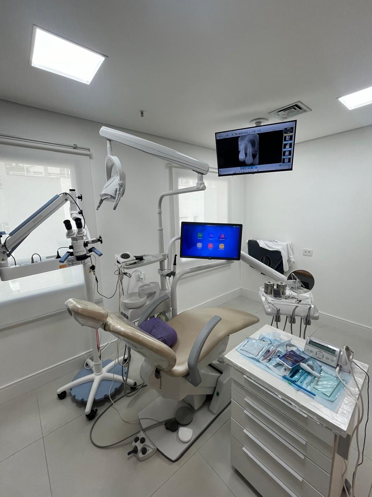

Tratamento de canal
Tratamento dos canais radiculares quando indicado, com atenção à anatomia, ao diagnóstico e ao planejamento.
Endodontia microscópica · Jardim Paulista
Tratamentos e retratamentos de canal com microscópio, diagnóstico cuidadoso e explicações claras em cada etapa.

Precisão e atenção em cada cuidado.
O que avaliamos
Cada indicação considera o exame clínico, as imagens e as condições individuais do dente.
Tratamento dos canais radiculares quando indicado, com atenção à anatomia, ao diagnóstico e ao planejamento.
Avaliação de dentes que já receberam tratamento e apresentam sinais, sintomas ou alterações que precisam ser investigados.
Investigação da origem da dor, sensibilidade ou alterações, com exame clínico, testes e exames complementares quando necessários.
Magnificação e cuidado
O microscópio operatório oferece ampliação e iluminação do campo de trabalho. Esses recursos auxiliam a visualização durante o diagnóstico e a condução do tratamento.
O planejamento considera o que foi observado no exame clínico, nas radiografias e em outros exames quando indicados. As possibilidades e os limites de cada caso são explicados antes de começar.
Conversa sobre os sintomas, histórico do dente e tratamentos anteriores, seguida pelo exame clínico.
Explicação do diagnóstico, das opções, das etapas e da previsão de consultas.
Orientações durante o tratamento e definição da restauração e do acompanhamento necessários para cada dente.
Quem cuida de você
Cirurgiã-dentista formada pela UNICAMP, especialista em Endodontia pela São Leopoldo Mandic e em Implantodontia pela FACOP.
Atendimento com planejamento individualizado, atenção aos detalhes e tempo para esclarecer suas dúvidas.
Atendimento particular no Jardim Paulista, São Paulo.
Já tem um encaminhamento? Converse sobre o agendamento
Antes da sua consulta
Informação para você compreender o cuidado e combinar seu próximo passo.
Tenho outra dúvidaO próximo passo é simples
Conte o que você precisa e consulte os horários disponíveis. Vamos orientar seu próximo passo.
Seu primeiro contato
Uma mensagem será preparada para você enviar no WhatsApp. O horário é combinado diretamente com o consultório.
Jardim Paulista · São Paulo